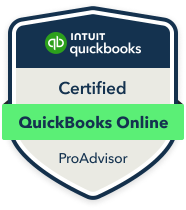

Bookkeeping Setup
Starting fresh or moving to QuickBooks or Xero? I can help you create a clear place to begin.
Starting from $1,500One-time
Running a business is already a lot of work. Bookkeeping shouldn't add to it. I help small businesses keep their books organized and affordable, so they have one less thing to worry about.

Choose the service that fits where your business is right now.
Starting fresh or moving to QuickBooks or Xero? I can help you create a clear place to begin.
Starting from $1,500One-timeBooks behind or difficult to understand? I can help bring your records up to date and more organized.
Starting from $1,500One-timeOngoing bookkeeping for businesses that want consistent support and a direct point of contact.
Starting from $300/monthOngoingLet's talk about your bookkeeping and figure out what makes sense.
A simple way to get started with your bookkeeping.
We discuss your business, where your books are now, and what kind of support you need.
We look at your situation together and decide whether setup, cleanup, or monthly bookkeeping makes sense.
I personally handle your bookkeeping and keep the communication straightforward.
Running a business is already a lot of work. Bookkeeping shouldn't add to it.
If your books are falling behind, becoming a burden, or taking up time you could be spending on your business, I can help.
I'm Arslan, the person behind Books by Arslan. I help small businesses with their bookkeeping and personally handle your books from start to finish, so you always work directly with me.
I'm a QuickBooks Online ProAdvisor and Xero Certified Professional. My goal is simple: take bookkeeping off your plate and give you one less thing to worry about.
More about meI work with established, industry-standard tools to keep your bookkeeping organized and easy to follow.
 Microsoft Excel
Microsoft Excel